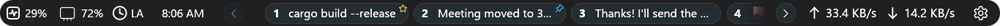

Themes & sizes
Looks native next to your taskbar
Dark
follows Windows in System mode
Light
switches live when Windows does
Small
26 px
Medium
30 px
Large
36 px — text, icons and gaps scale together
